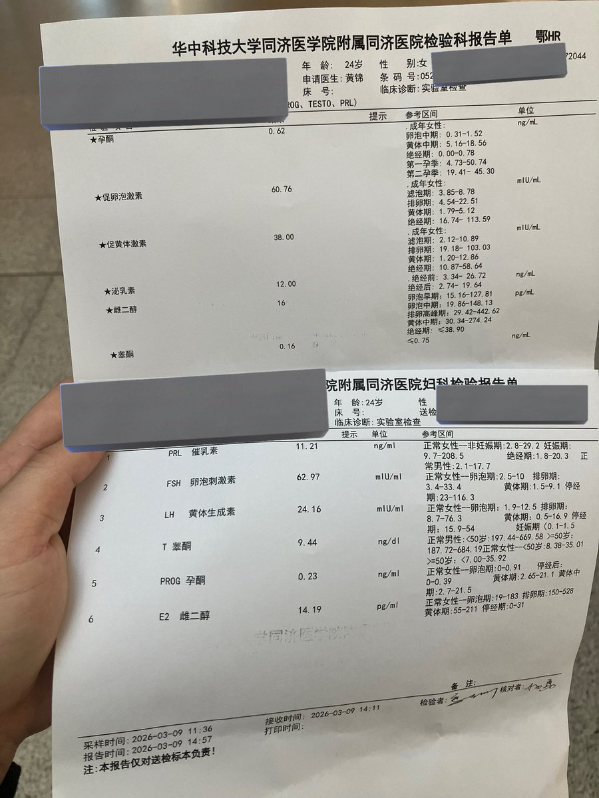
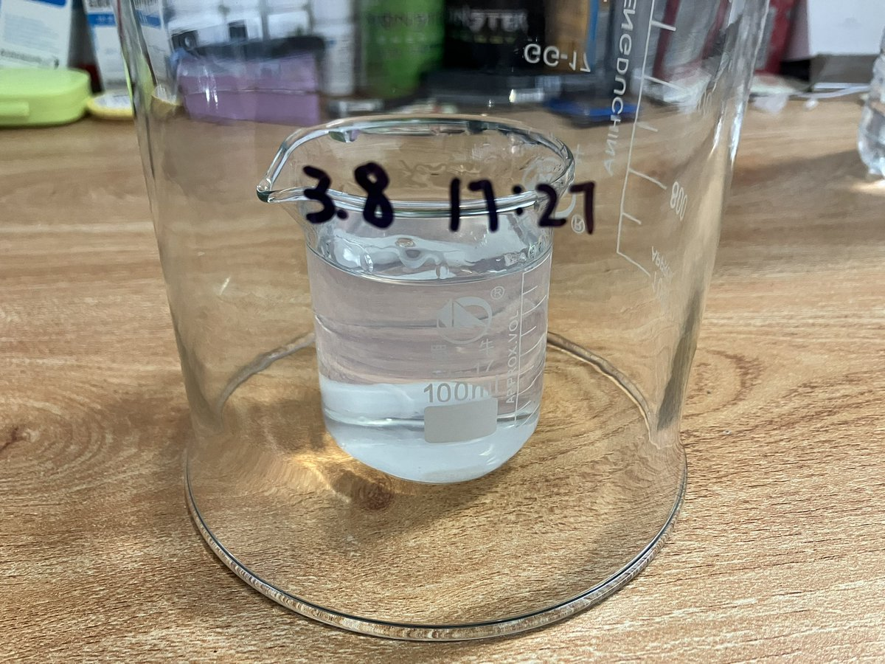

北雁冬翼（simone luxem）🏳️⚧️🏳️🌈🔬
@Simone_Luxem
寄，做出来一坨废物，卵用没有….
其实早就该发现的，因为甚至没有凝固，整个是半液体状态，然后仍然算是有侥幸心理吧还是试了试，结果果然…药剂学这门学科是有存在的原因的（
再等等我再重新研究下吧….


北雁冬翼（simone luxem）🏳️⚧️🏳️🌈🔬
@Simone_Luxem
啊嘿嘿…第一锅试验品做好啦，打算放24h脱气泡之后封装～
先给自己试一试吧，稳定hrt两天后去查一下血药浓度，如果合格的话，就公布SOP，以及免费发放给有需要的同类
不要恐慌呢，不要害怕呢，都会好的呢～ https://t.co/MlZ4LCYrz8 https://t.co/5Ef0QGdrMe